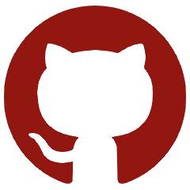
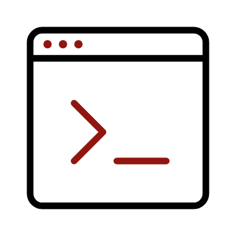
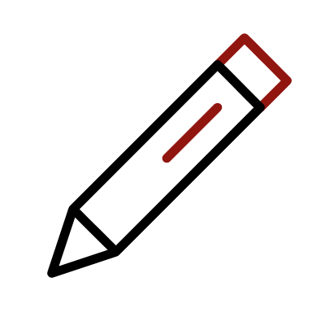

Hello, I'm Michael Myscile but you can also find me as MidenZer0 on gitHub or social networks. You may be wondering why this pseudonym ? In greek "Miden" means "Zero". Zero is a nod to the binary code but it also represents the beginning, and in my case a fresh start in my journey to becoming a web developer..
I'm currently learning to code  by myself and I hope to get a traning formation very soon. I'm a fashion fan with a high sensitivity to all forms of design. 
I hope you enjoy this website.